Exploring temporal and spatial patterns and nonlinear driving mechanism of park perceptions: A multi-source big data study
To fully realize the benefits of parks, they must be both accessible and usable, with those excelling in these aspects often perceived as more attractive. Traditional surveys for evaluating perceived park accessibility, usability, and attractiveness are expensive and time-consuming, prompting the adoption of social media data as a viable alternative. This study fine-tuned the Chinese-RoBERTa-wwm-ext model on a specially curated dataset to measure perceived accessibility, usability, and attractiveness across 270 parks in Beijing and Guangzhou through 153,872 online comments. We conducted statistical analyses to uncover temporal patterns and incorporate park perception scores into the 2SFCA method for spatial distribution analysis. Additionally, we utilized XGBoost, SHAP, and PDP to investigate the nonlinear driving mechanisms behind these perceptions. Key findings include: (1) Park visitation demonstrates a strong seasonal pattern, with central urban parks consistently outperforming suburban ones; (2) Central subdistricts might face reduced park services due to high population demands; (3) Accessibility is significantly influenced by ticket pricing and transportation availability, especially bus stations; (4) Usability is optimal at a moderate density of sports and fitness facilities (22 per km2) and proximity to residential areas; (5) Attractiveness benefits from closeness to the Central Business District and amenities such as toilets and restaurants, with a critical park size threshold of 9 km2. These public-oriented analyses identify areas for improvement and factors shaping public perceptions, providing valuable guidance for strategic decision-making and effective urban management.
主要图表 | Main Figures and Tables
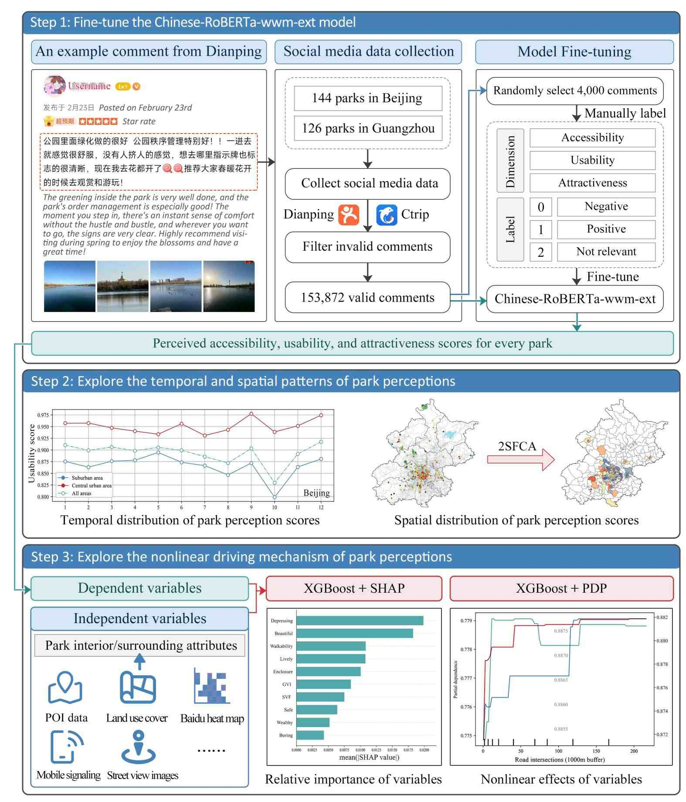
Figure 1
Research workflow.
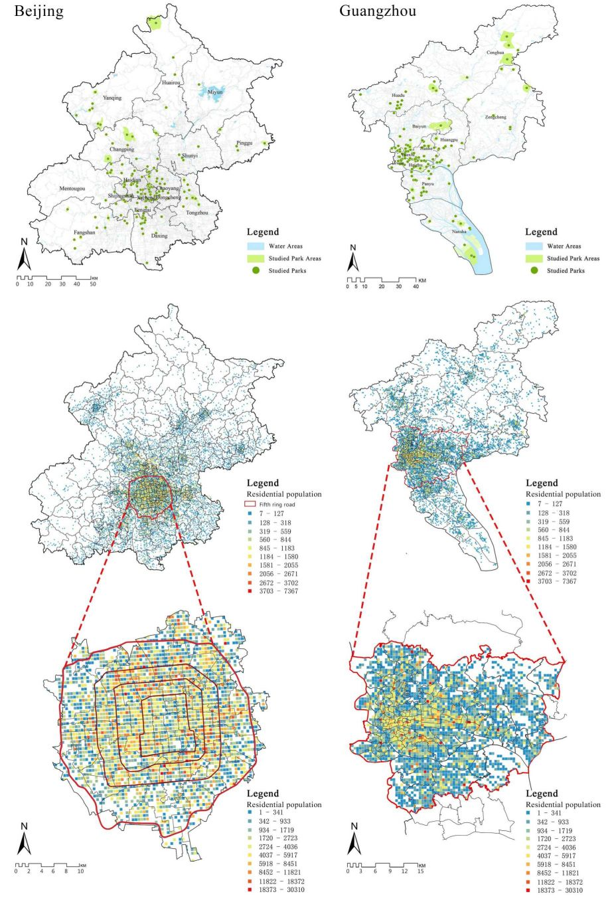
Figure 2
Spatial distribution of the studied parks and residential population in Beijing and Guangzhou.
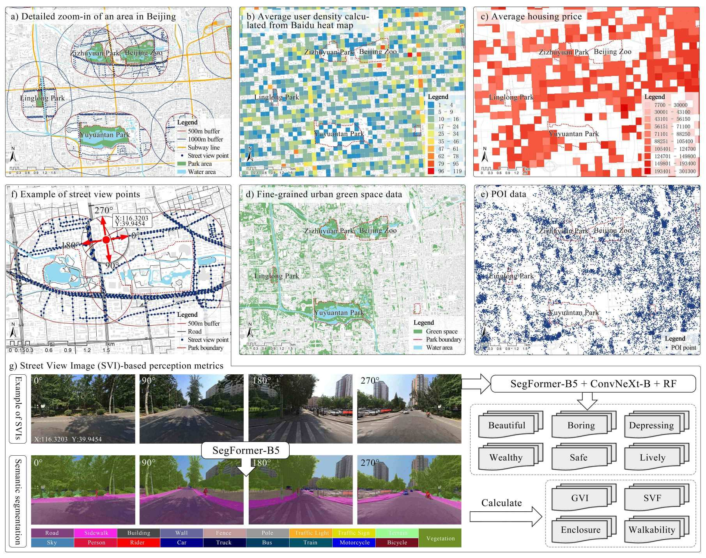
Figure 3
Data visualizations. Panels (a)-(e) display urban data including user density, housing price, green space, and POI. Panels (f) and (g) illustrate SVIs and the corresponding metrics extracted using deep learning methods.
Table 1
Descriptive statistics of all variables.
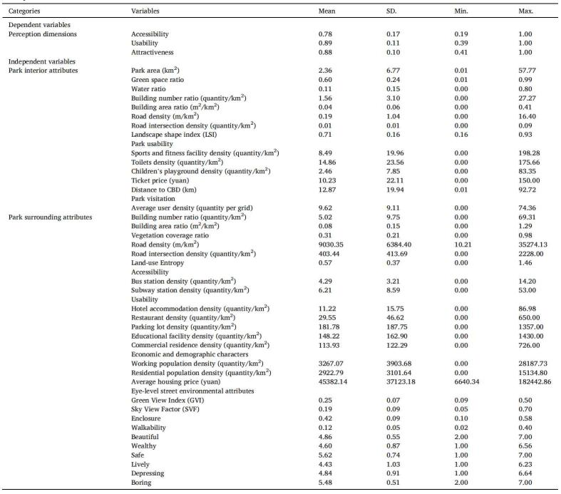
Table 2
Comparative performance of the text classification models based on ACC, Precision, Recall, and F1 score (N = 4000).
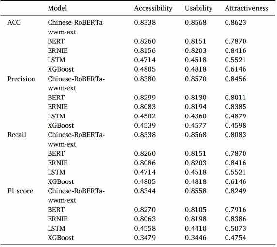
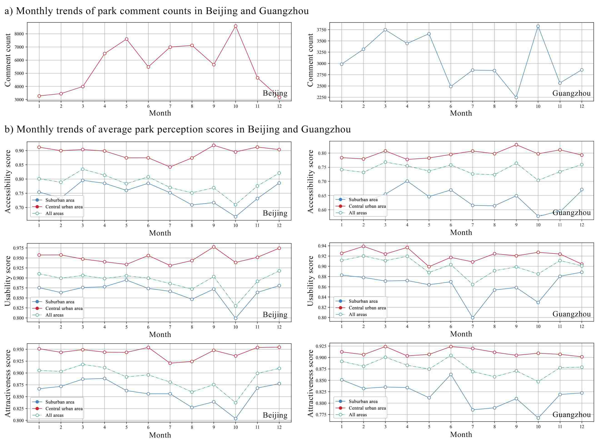
Figure 4
Monthly trends of comment counts and average park perception scores in Beijing and Guangzhou.
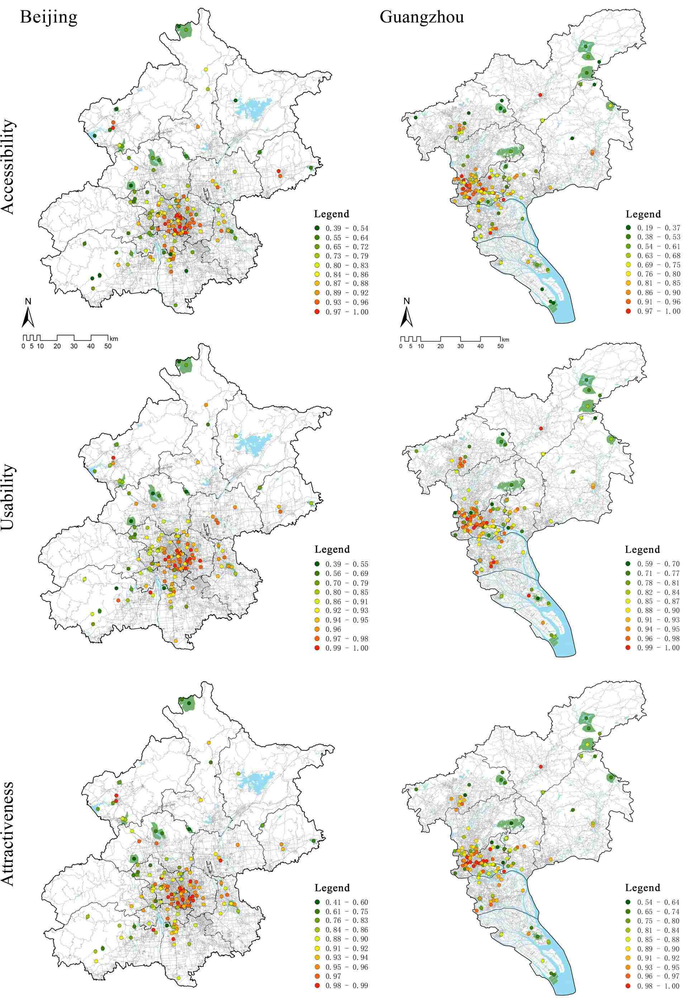
Figure 5
Geographic distribution maps of park perception scores in Beijing and Guangzhou.
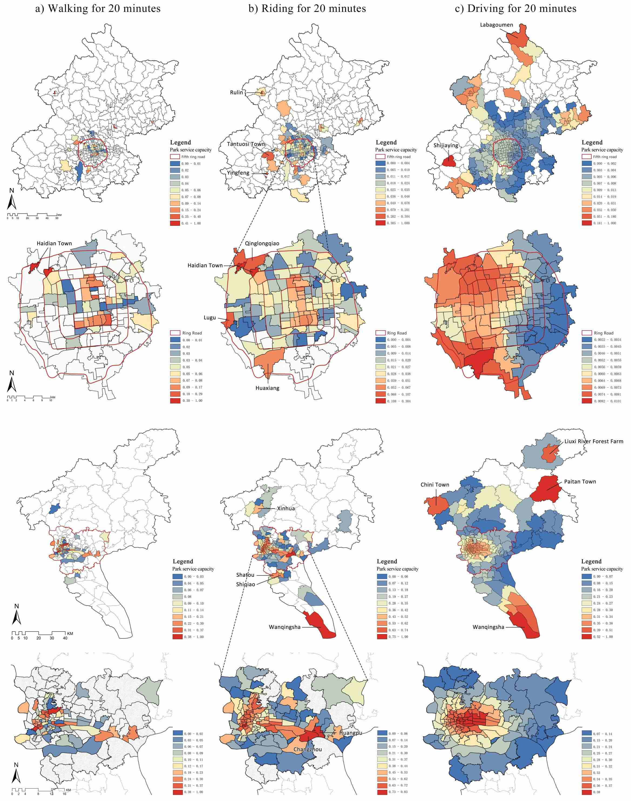
Figure 6
Distribution maps of park service capacity under three travel modes.
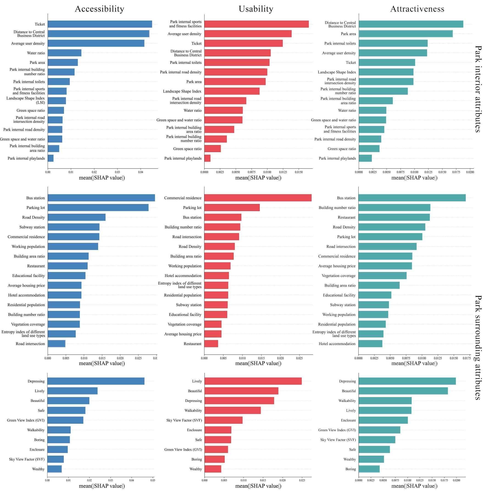
Figure 7
Results of the relative importance of environmental attributes on park perceptions.
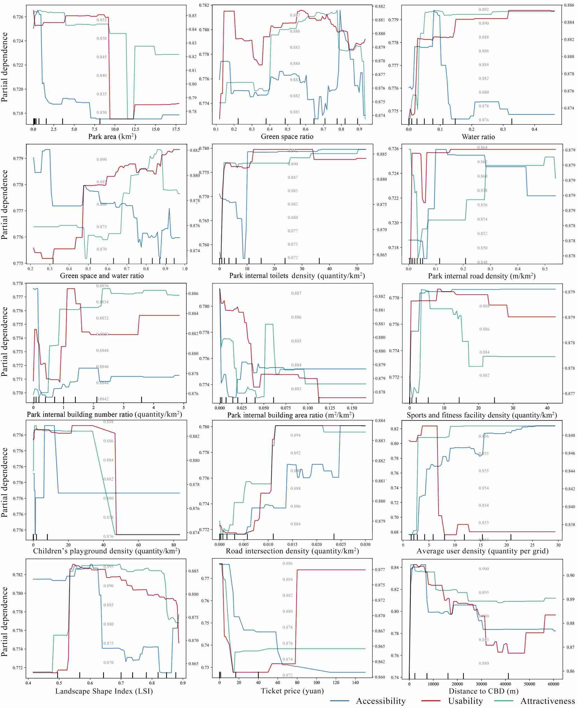
Figure 8
Nonlinear influence of park interior attributes on park perceptions. Each plot features three y-axes, corresponding respectively to the partial dependence values for accessibility, usability, and attractiveness.
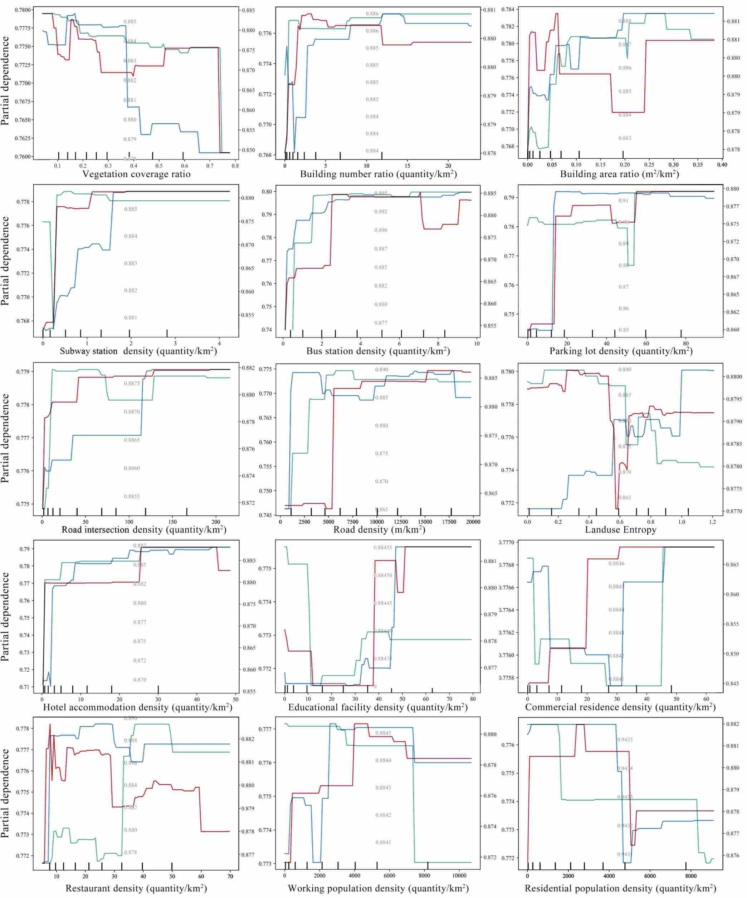
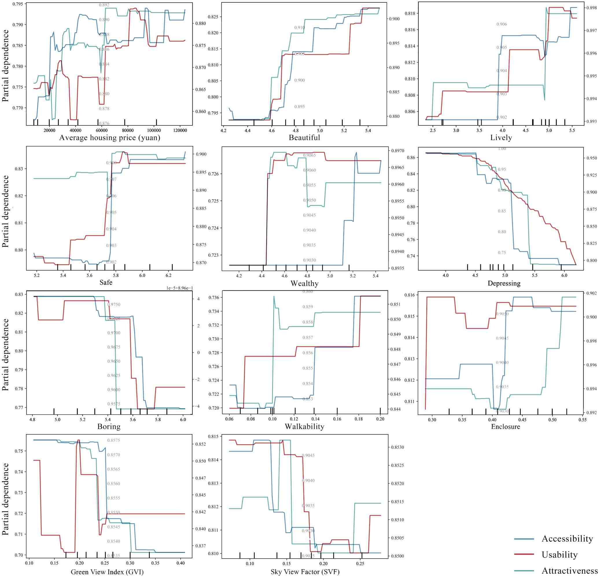
Figure 9
Nonlinear influence of park surrounding attributes on park perceptions. Each plot features three y-axes, corresponding respectively to the partial dependence values for accessibility, usability, and attractiveness.